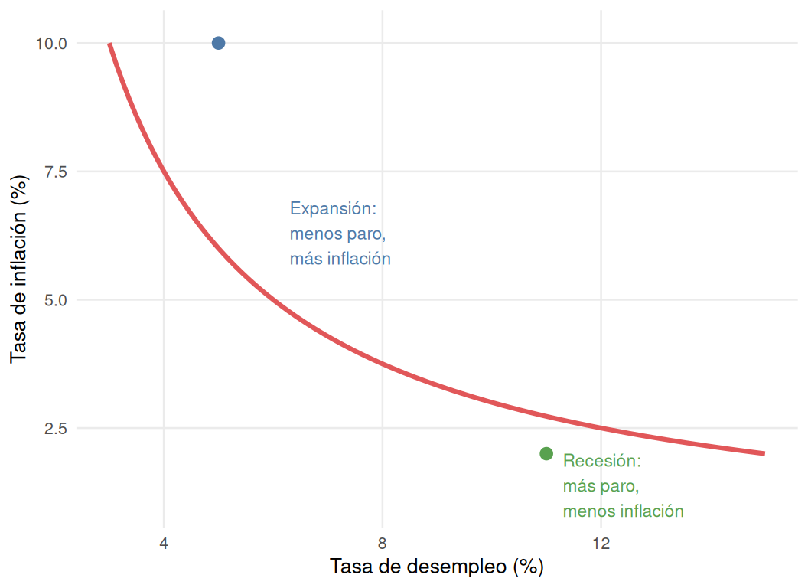
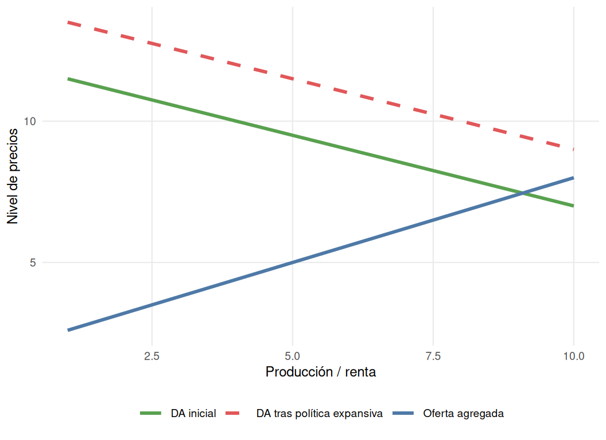

| Año | Inflación (IPC) |
|---|---|
| 2025 | 2,44 % (julio) |
| 2024 | 2,80 % |
| 2023 | 3,56 % |
| 2022 | 8,40 % |
| 2021 | 3,10 % |
| 2020 | -0,32 % |
| 2019 | 0,70 % |
| 2018 | 1,67 % |
| 2017 | 1,96 % |
| 2016 | -0,20 % |
| 2015 | -0,50 % |
| 2014 | -0,15 % |
| 2013 | 1,42 % |
| 2012 | 2,44 % |
| 2011 | 3,20 % |
| 2010 | 1,80 % |
| 2009 | -0,28 % |
| 2008 | 4,09 % |
| 2007 | 2,78 % |
| 2006 | 3,52 % |
11 Los precios, la inflación y la política monetaria
11.1 El nivel de precios y el poder adquisitivo
Una queja habitual es «todo está carísimo, cada vez somos más pobres». Sin embargo, en economía el nivel de precios por sí solo no dice nada: lo relevante es el poder adquisitivo.
- El nivel de precios indica cuántas unidades monetarias cuesta un producto.
- El poder adquisitivo indica cuántos bienes reales se pueden comprar, cruzando el nivel de precios con el nivel de ingresos.
TipEjemplo: una cerveza en Malasia
Una cerveza que cuesta 5 ringgits (1 €) puede parecer barata a un turista español. Pero si el salario medio en Malasia ronda los 300 € al mes, un residente local necesitaría dedicar una proporción de su renta mucho mayor que un español con un sueldo de 1200 € para comprar la misma cerveza. El nivel de precios es bajo, pero también lo es el poder adquisitivo local.
TipEjemplo: el cambio de la peseta al euro (2002)
El 1 de enero de 2002, España sustituyó la peseta por el euro, con una equivalencia fija de 1 € = 166 pesetas. Todos los precios, salarios, ahorros y deudas se dividieron por 166 al mismo tiempo. Aunque el nivel de precios se redujo drásticamente en apariencia, el poder adquisitivo real de los españoles no cambió: podían comprar exactamente los mismos bienes que antes. El cambio de moneda fue neutral.
Distinto es lo que ocurre cuando los precios suben de forma sostenida mientras los salarios permanecen estancados: en ese caso sí se pierde poder adquisitivo real, porque el dinero compra cada vez menos, aunque su cantidad nominal no cambie.
11.2 La inflación
NotaDefinición
La inflación es el crecimiento generalizado y sostenido de los precios de los bienes y servicios de una economía a lo largo del tiempo.
Para que exista inflación en sentido estricto deben cumplirse dos condiciones: debe ser generalizada (afectar a la mayoría de los bienes y servicios, no a uno solo) y debe ser sostenida (mantenerse en el tiempo, no ser una subida puntual).
11.2.1 Las consecuencias de la inflación
La inflación perjudica a la economía por dos vías. La primera es la pérdida de poder adquisitivo: los salarios y las pensiones suelen subir más despacio que los precios, de modo que, con el paso del tiempo, el mismo sueldo permite comprar menos bienes. A esto se le llama a veces «el ladrón invisible», porque nadie sustrae dinero directamente, pero el efecto sobre la capacidad de compra es equivalente.
La segunda es la incertidumbre: cuando no se sabe con certeza cuánto subirán los precios ni los salarios, las familias posponen grandes decisiones de gasto (como comprar una vivienda) y las empresas cancelan inversiones cuya rentabilidad futura no pueden calcular con seguridad. Esta parálisis puede derivar en cierre de empresas y aumento del desempleo.
La Tabla 11.1 permite distinguir tres etapas: entre 2000 y 2008 los precios crecieron de forma sostenida en torno al 3-4 % anual; entre 2009 y 2016, la crisis financiera hundió el consumo y provocó varios años de tasas negativas (deflación); y entre 2021 y 2022, la crisis de suministros tras la pandemia y la guerra de Ucrania, que disparó el precio del petróleo y el gas, elevó la inflación hasta el 8,40 %, antes de moderarse de nuevo hacia 2024-2025.
TipEjemplo extremo: la hiperinflación de la República de Weimar
Tras la Primera Guerra Mundial, Alemania emitió dinero sin control para pagar sus deudas de guerra. El resultado fue una hiperinflación devastadora: una onza de oro que valía 170 marcos en enero de 1919 llegó a valer 87 billones de marcos en 1923. El dinero pasó a valer menos que el papel en el que estaba impreso.
11.2.2 Ganadores y perdedores con la inflación
La inflación no perjudica a todos por igual. Entre los perjudicados están los ahorradores, cuyo dinero guardado pierde valor real con el tiempo; los prestamistas, que recuperan un dinero que vale menos de lo que prestaron; y los pensionistas y trabajadores con rentas fijas, cuyos ingresos suelen actualizarse más despacio que los precios.
Entre los beneficiados está, paradójicamente, el Estado, cuyos ingresos por impuestos (IVA, IRPF) crecen junto con los precios y los salarios nominales, mientras que buena parte de sus gastos fijos —como la devolución de deuda pública emitida en el pasado— no aumenta en la misma proporción. También se benefician los deudores en general: el valor real de sus deudas se reduce con la inflación.
TipCaso real: la protesta de los pensionistas en España (2017)
En 2017, las pensiones subieron por ley solo un 0,25 %, mientras que la inflación se situó cerca del 2 %, ocho veces más rápido. Los pensionistas, al perder poder adquisitivo de forma sostenida, protagonizaron protestas masivas en toda España.
11.3 Las causas de la inflación
Los economistas distinguen dos grandes causas de la inflación: la inflación de demanda y la inflación de costes.
La inflación de demanda se produce cuando el gasto total de la economía —familias, empresas y Estado— supera la capacidad de producción disponible. Puede originarse por un recalentamiento de la economía, cuando un país en fuerte expansión se acerca al pleno empleo y las fábricas ya no pueden aumentar la producción al ritmo que crece la demanda, lo que permite a las empresas subir precios sin perder ventas; o por una expansión monetaria excesiva, cuando se inyecta mucho dinero en la economía sin que la producción real haya aumentado en la misma proporción.
La inflación de costes se origina en el lado de la oferta: se encarecen los factores de producción —energía, materias primas, salarios— y las empresas trasladan ese incremento a sus precios de venta para no perder margen. Un ejemplo reciente fue el encarecimiento del petróleo y el gas tras la pandemia y la guerra de Ucrania (2022-2023), que elevó el coste de producir y transportar prácticamente cualquier bien.
AdvertenciaLa espiral salarios-precios
La inflación de costes puede desencadenar un ciclo autoalimentado: primero suben los costes de producción; las empresas trasladan esa subida a los precios; los trabajadores pierden poder adquisitivo y exigen aumentos salariales; si las empresas conceden esos aumentos, sus costes laborales se disparan y vuelven a subir los precios. El ciclo se repite indefinidamente si no se interrumpe.
11.4 La deflación
NotaDefinición
La deflación es la bajada generalizada y sostenida de los precios de los bienes y servicios de una economía, lo contrario a la inflación.
Podría parecer una buena noticia que los precios bajen, pero la deflación puede ser tan destructiva como la inflación, o más. El motivo es psicológico: si los consumidores saben que un bien costará menos el mes siguiente, tienden a posponer su compra. Cuando esa decisión se generaliza, se produce una espiral deflacionista: caen las ventas, las empresas acumulan existencias sin vender, recortan costes despidiendo trabajadores, y esos trabajadores en paro consumen todavía menos, lo que obliga a las empresas a bajar precios aún más.
TipCaso real: Japón y la deflación prolongada
Japón ha vivido varias décadas de precios estancados o en caída, hasta el punto de que generaciones enteras han crecido sin experimentar inflación. Esta situación ha contribuido a un estancamiento económico prolongado, con consumo e inversión débiles.
Ni la inflación descontrolada ni la deflación son deseables. Por ello, instituciones como el Banco Central Europeo persiguen la estabilidad de precios: una inflación suave y controlada, en torno al 2 % anual, que evite la deflación sin erosionar excesivamente el poder adquisitivo.
11.5 La medición de la inflación
El indicador más utilizado para medir el nivel general de precios es el Índice de Precios al Consumo (IPC). Su cálculo, en España a cargo del Instituto Nacional de Estadística, se desarrolla en tres fases.
En primer lugar, la Encuesta de Presupuestos Familiares estudia los hábitos de consumo para conocer en qué gasta su dinero una familia media. A partir de esos datos se elabora la cesta de la compra representativa, asignando un peso a cada grupo de productos según su importancia real en el gasto de los hogares. Por último, se realiza un seguimiento mensual de precios, recogiendo el coste de esos artículos en miles de establecimientos de todo el país.
La tasa de inflación entre dos períodos se calcula con la siguiente fórmula:
\[\text{Tasa de inflación} = \frac{IPC_{\text{actual}} - IPC_{\text{anterior}}}{IPC_{\text{anterior}}} \times 100\]
Por ejemplo, si una cesta de la compra representativa vale 100 € en un año y 110 € al año siguiente, la tasa de inflación de ese período es:
\[\frac{110 - 100}{100} \times 100 = 10\,\%\]
11.6 El desempleo y la inflación: la curva de Phillips
El desempleo y la inflación tienden a estar inversamente relacionados a corto plazo: reducir uno suele elevar el otro. Esta relación se conoce como curva de Phillips.

Como muestra la Figura 11.1, en épocas de expansión económica las empresas contratan más trabajadores (baja el desempleo), lo que impulsa el consumo y permite a las empresas subir precios (sube la inflación). En épocas de recesión ocurre lo contrario: las empresas despiden trabajadores (sube el desempleo), el consumo se hunde y las empresas bajan precios para vender (baja la inflación o aparece la deflación).
Este dilema condiciona la actuación de los Gobiernos: si se estimula el consumo para reducir el desempleo, tiende a generarse inflación; si se enfría la economía para controlar la inflación, tiende a aumentar el desempleo.
ImportanteLa estanflación
A largo plazo, o ante un choque muy grave, es posible que ambos problemas coincidan: alto desempleo y alta inflación al mismo tiempo. Este fenómeno se conoce como estanflación y suele originarse en un choque de oferta severo, como un encarecimiento drástico del petróleo. Es especialmente difícil de combatir porque las políticas que reducen el desempleo tienden a agravar la inflación, y las que frenan la inflación tienden a agravar el desempleo.
11.7 El Banco Central Europeo y el Eurosistema
El Eurosistema es la autoridad monetaria de la eurozona. Está formado por el Banco Central Europeo (BCE), con sede en Fráncfort, y los bancos centrales nacionales de los países que han adoptado el euro —en España, el Banco de España—.
El Eurosistema cumple cuatro funciones principales: la emisión de billetes y monedas de curso legal en la eurozona; la gestión de las reservas de divisas extranjeras para operar en los mercados internacionales; la supervisión del sistema financiero, vigilando la solvencia de los bancos comerciales; y la ejecución de la política monetaria única para el conjunto de los países que comparten el euro, su función más determinante.
11.8 La política monetaria
NotaDefinición
La política monetaria es el conjunto de medidas que adopta el Banco Central Europeo para controlar la cantidad de dinero en circulación y los tipos de interés, con el fin de influir en la demanda agregada y alcanzar los objetivos macroeconómicos de crecimiento, empleo y estabilidad de precios.
El mandato del BCE otorga prioridad absoluta a la estabilidad de precios: se considera cumplido el objetivo cuando la inflación se sitúa en torno al 2 % anual a medio plazo. El crecimiento económico y el empleo son objetivos secundarios, que el BCE persigue solo si la inflación está bajo control. El objetivo se fija en el 2 % y no en el 0 % por dos razones: apuntar al 0 % arriesga caer en deflación ante cualquier desviación a la baja, y una inflación suave da margen a empresas y trabajadores para ajustar precios y salarios sin bloquear la actividad económica.
Para influir en la inflación, el BCE actúa sobre dos variables intermedias: la cantidad de dinero en circulación (si hay más dinero disponible para gastar sin que aumente la producción de bienes, los precios tienden a subir) y el tipo de interés (encarecer o abaratar el crédito modifica el consumo y la inversión, y con ello la presión sobre los precios).
Para mover esas variables, el BCE dispone de tres instrumentos. Las operaciones de mercado abierto son el instrumento principal: el BCE presta dinero a los bancos comerciales a un tipo de interés de referencia que, trasladado a los préstamos que estos conceden a sus clientes, determina el coste del crédito en toda la economía. El coeficiente legal de reservas obliga a los bancos a mantener inmovilizado un porcentaje de los depósitos de sus clientes; si el BCE lo eleva, los bancos pueden prestar menos y se reduce la cantidad de dinero en circulación. Las facilidades permanentes permiten a los bancos ajustar sus reservas diariamente: pueden pedir dinero de urgencia al BCE (facilidad marginal de crédito) o depositar sus excedentes en él a cambio de un interés (facilidad de depósito).
TipMedidas extraordinarias: la expansión cuantitativa
Tras la crisis financiera de 2008 y la pandemia de covid-19, con los tipos de interés ya en el 0 % y la inflación por debajo del objetivo, el BCE recurrió a la expansión cuantitativa: la compra masiva de bonos y deuda pública en el mercado. Esta compra eleva el precio de esos activos, hunde su rentabilidad y reduce los tipos de interés a largo plazo, inyectando liquidez en el sistema bancario para reactivar el crédito.
11.8.1 La política monetaria expansiva
La política monetaria expansiva busca estimular la economía aumentando la cantidad de dinero en circulación y reduciendo el tipo de interés. Al abaratarse la financiación, familias y empresas piden más crédito, lo que incrementa el consumo (C) y la inversión (I), dos componentes de la demanda agregada:
\[DA = C + I + G + (X - M)\]

Como ilustra la Figura 11.2, el desplazamiento de la demanda agregada hacia la derecha genera una cadena de efectos: las empresas aumentan la producción para atender la mayor demanda, contratan más trabajadores (baja el desempleo) y, al mismo tiempo, aprovechan la fortaleza de la demanda para subir precios (sube la inflación).
Este tipo de política se aplica principalmente en épocas de crisis o recesión, cuando la prioridad es reactivar el crecimiento y reducir el desempleo, asumiendo como coste una mayor inflación. Un ejemplo histórico es la política del BCE tras la crisis de 2008: los tipos de interés, en el 4,25 % en el verano de ese año, se redujeron progresivamente hasta el 0 % en 2016 para reactivar una economía estancada.
11.8.2 La política monetaria contractiva
La política monetaria contractiva persigue el objetivo contrario: frenar la inflación reduciendo la cantidad de dinero en circulación y encareciendo el crédito mediante la subida de los tipos de interés. Al encarecerse la financiación, familias y empresas posponen sus decisiones de consumo e inversión, contrayendo la demanda agregada.
La secuencia de efectos es la inversa a la de la política expansiva: ante una demanda más débil, las empresas acumulan existencias sin vender y reducen la producción; al producir menos, prescinden de trabajadores y aumenta el desempleo; y, para dar salida a sus productos, las empresas bajan los precios o dejan de subirlos, lo que frena la inflación.
Se aplica principalmente en épocas de fuerte expansión económica, cuando el riesgo es el sobrecalentamiento y una inflación excesiva, asumiendo como coste un menor crecimiento y más desempleo. Un ejemplo reciente es la actuación del BCE entre 2022 y 2023: para combatir una inflación cercana al 10 % en la eurozona, elevó los tipos de interés de referencia desde el 0 % hasta más del 4 %.
TipEl mecanismo de transmisión a los hogares: el euríbor
El euríbor es el tipo de interés medio al que los principales bancos europeos se prestan dinero entre sí. Cuando el BCE aplica una política contractiva, el euríbor sube, y con él la cuota de las hipotecas a tipo variable, que en España son mayoritarias. Una familia con una hipoteca referenciada al euríbor más un diferencial fijo verá aumentar su cuota mensual de forma directa cuando el BCE eleve los tipos de interés, reduciendo la renta disponible para otros gastos.